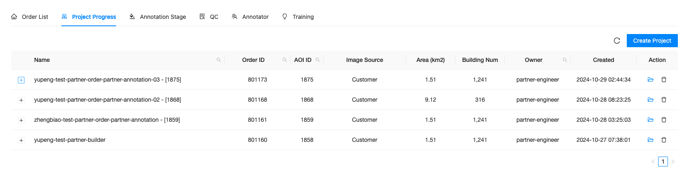
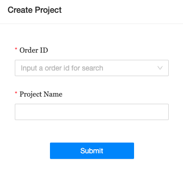
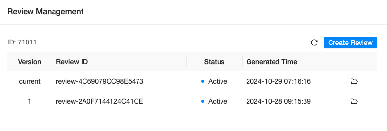

2. Project Progress
Project process allows users to customize the model settings, track project progress and manage annotation progress for the projects that require both modeling and annotation within users’ organization.
 General Interface of Project Progress
2.1. Create Project
Users can click on Create Project button located on the top right of the project list to create a new annotation project.
Once entered, users have to associate the project with an order ID and provide a project name. Click on Submit to complete the process.
 Create Project
2.2. Project List
Newly created and ongoing projects will be listed in the table below. Users can obtain basic information about the project from the project list.
2.2.1. Field
The following fields are provided in the project list table:
Name: name of the project, provided when the project was created
Order ID: assoicated order ID, which is associated with orders in the order list
AOI ID: AOI ID that is associated with the order
Image Source: the provider of the imagery datasets
Area (KM2): size of the AOI in km2
Building Num: Estimated number of buildings inside of the AOI
Owner: owner/creator of the annotation project
Created: time stamp when the order was created
Action: two actions that can be applied to Action: View Detail and Action: Delete.
2.2.2. Expanded Details
By clicking on + on the left of each project, users will be able to see more detail information about the order.
The following information is provided:
Name: name of the project and associated model that is applied
Type: extraction model type that is applied
Step: current step of the project
Status: current status of the step
Action: Review Management
2.2.2.1. Review Management
For projects that are in Review & Delivery step, users can click on the button to create and manage current review project.
 Review Management Panel
To create a review project, simply click on the Create Review button located on the top-right of the panel. A new project will be created and listed under review management panel as well as under the QC tab.
To enter a QC review project, users can click on button to view the QC review project.